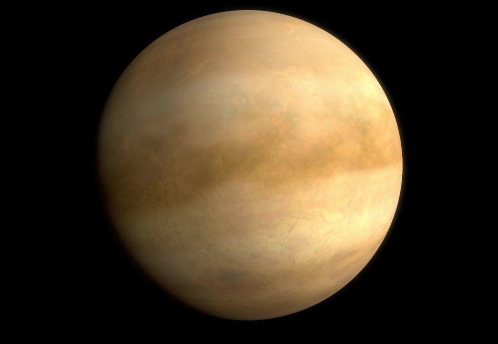

Venus
Venus is the second planet from the Sun and is often called Earth's "twin" because of its similar size and structure. However, Venus has a very thick atmosphere that traps heat, making it the hottest planet in the solar system.
The surface of Venus is covered with volcanic plains and mountains. Its atmosphere is made mostly of carbon dioxide, creating a strong greenhouse effect that causes extremely high temperatures.

Facts About Venus
- Venus is the hottest planet in the solar system.
- It rotates in the opposite direction to most planets.
- A day on Venus is longer than a year on Venus.
- Venus has a thick atmosphere made mainly of carbon dioxide.
- It has no moons.